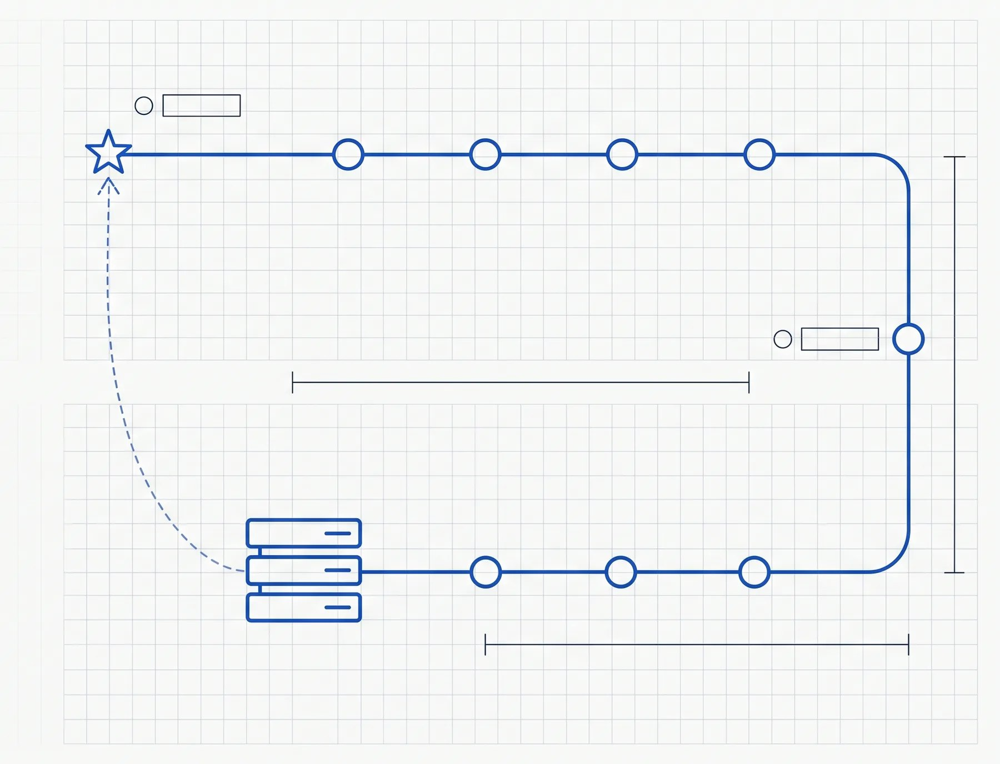
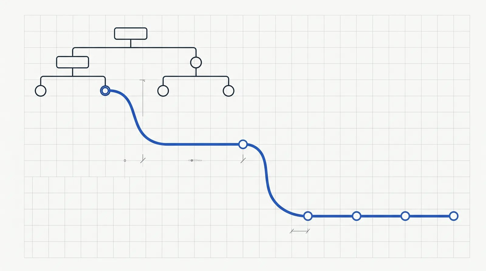
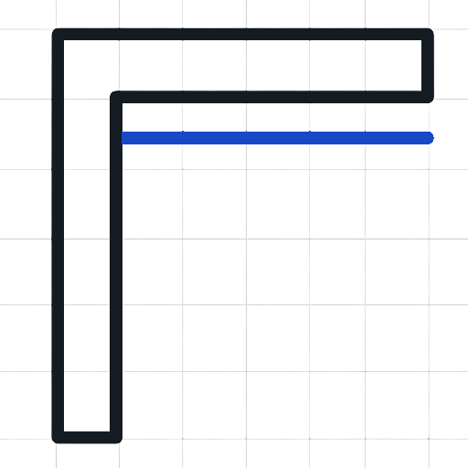
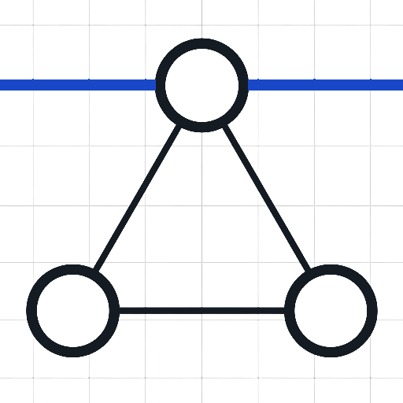
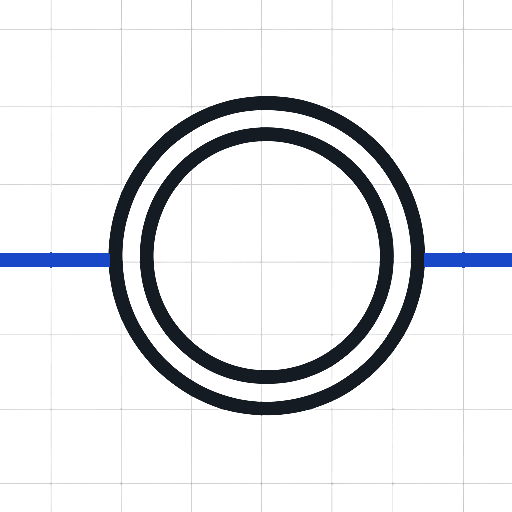
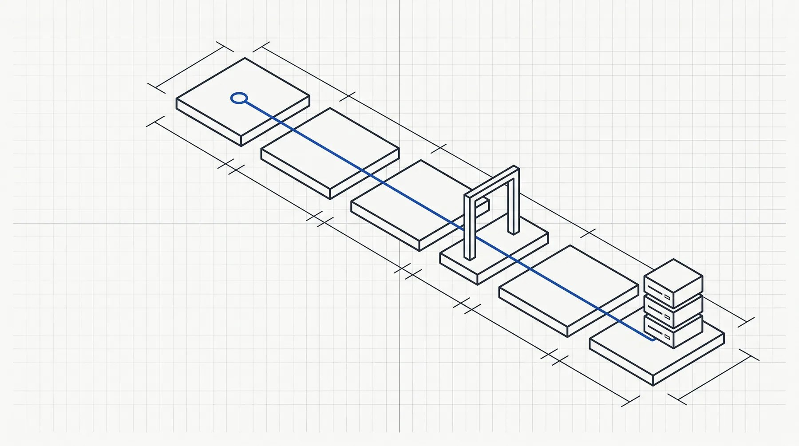
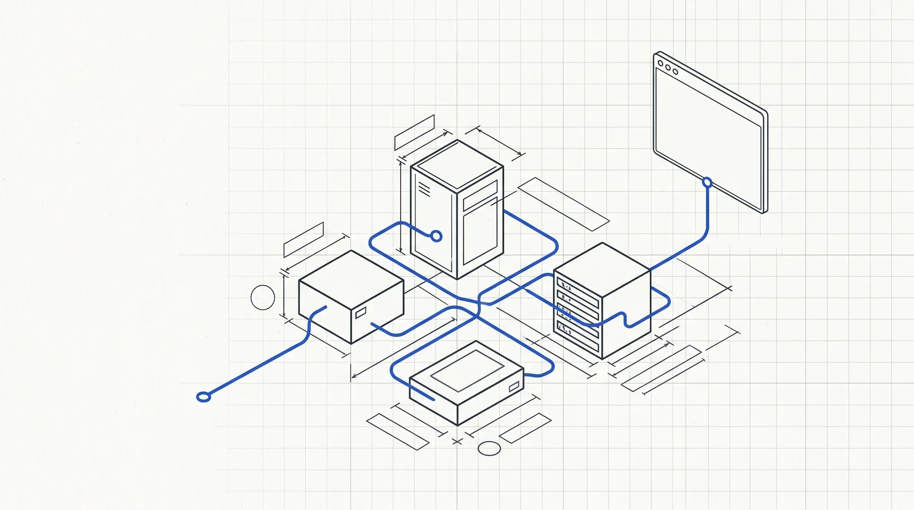
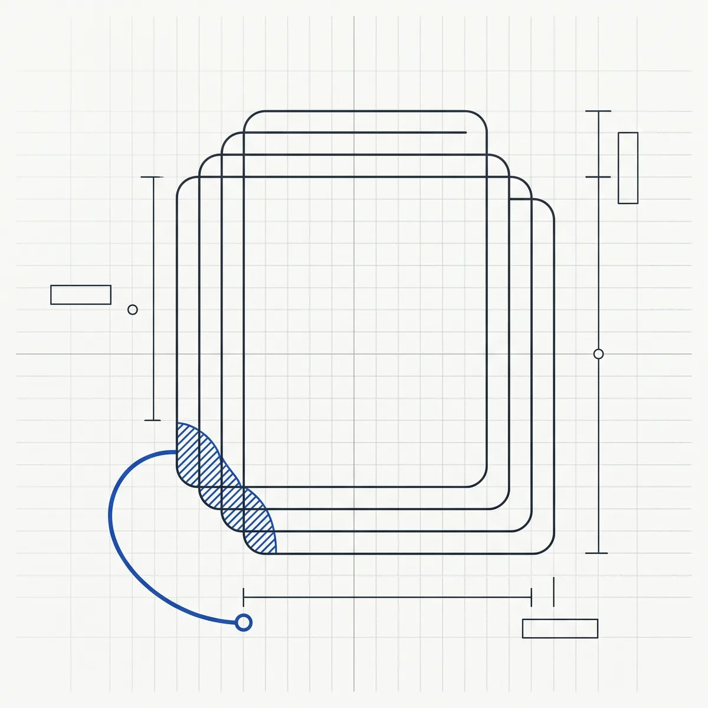

Truline is an enterprise-architecture platform where the service model and the software delivery that changes it are one graph. Every capability, requirement, release, task, pull request and change is a typed, lineaged record. Temporal workflows move them through their lifecycles, and the build fails the moment the model, the code and the running system disagree.

The repository holds the record store, the factory, the gateway and a worked vertical. Start where your problem is.


A task record becomes a pull request through an isolated worker, a scanner, containment and a release gate that is a separate, fresh-context agent. Tidy-First is enforced on the PR body. Green CI is a precondition, never a verdict.
Read the operating model →
A dependency-free CSDM core: capabilities, applications, services and the relationships between them, with state machines and a conformance checker you can run against your own repository in CI.
Seecsdm-on-beads →

Beads: typed, namespaced, lineaged records with governed state machines and an append-only event log, behind one API and one MCP gateway with an identity contract.
Open the substrate →This is the order a change moves in. Each step leaves a record linked to the one before it, so the question "why does this exist" always has an answer.

It carries acceptance criteria testable by someone who was not in the conversation, and a dated conformance verdict that sprints burn down.
One objective, decomposed into outcomes with a work class: feature, enabling, blocking, risk or security. Balance is reported, not asserted.
Temporal owns the workflow. The worker gets a clone, a persona and the spec, and nothing else. It cannot merge.
Private identifiers, conformance checks and the Tidy-First declaration run in CI. Then a fresh-context gate agent writes the verdict: merge, merge with changes, or do not merge.
What was merged, under which verdict, for which outcome. The running system is observed against it.
When the model, the code and the cluster disagree, a finding is filed and dispositioned: backlogged, ruled, already fixed, or not a defect. Rules that prevent recurrence go back into the doctrine.
$ git clone https://github.com/grantbest/truline && cd truline
$ cp quickstart/env.example quickstart/.env # set SUBSTRATE_ENCRYPTION_KEY
$ docker compose -f quickstart/docker-compose.yml up --build
$ ./quickstart/seed.sh # one task bead, through the gateway
$ open http://localhost:8080/factory # the boardThat brings up Postgres, the bead store, the MCP and REST gateway and the console, with one seeded task on the factory board.
It does not start the factory worker, which needs Temporal and a repository to work on. The dispatcher README is the next step, and everything a real deployment must supply is configuration: the code refuses to start without it rather than guessing.
Deployed from a k3s cluster with ArgoCD and Cloudflare Access at the edge. Those manifests stay with the operator; the platform does not care which cluster it runs on.

The framework ships. Your record stays yours.

Truline was exported from a private monorepo as a framework: the code, the harness, the metamodel, the doctrine, the personas and the skills, with example charters and registries in the shape the tooling validates. The operator's own charters, measurements and amendment log never leave their repository, and the exporter's record scan fails the build if any of it leaks.
Hosts, domains and people are rewritten to neutral names, and a private-identifier scanner runs on every pull request so your deployment's names stay out of your published trees too.